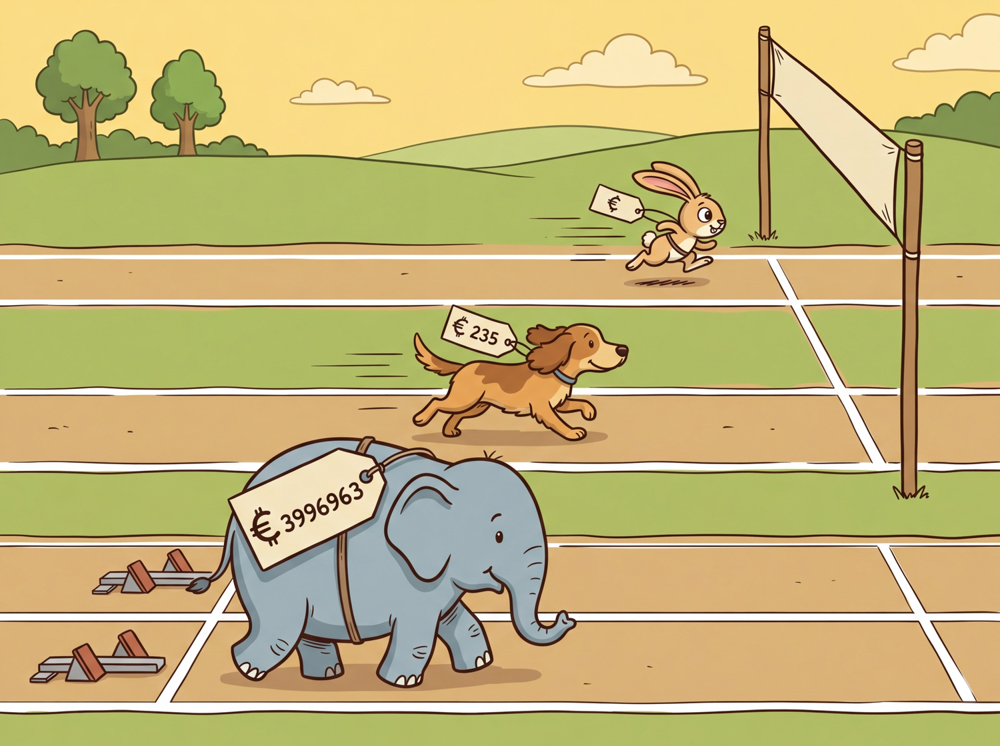

"I calculated the cost of running GPT-4 on every request. Then I calculated the cost of therapy after seeing the invoice. The Pareto frontier suddenly became very interesting."
Label AI Agent
Prerequisites
This section builds on the hybrid pipeline patterns from Section 12.3. Understanding of API pricing models from Section 10.1 and the inference optimization techniques from Section 09.1 will help contextualize the cost analysis frameworks presented here.
LLM quality is easy; LLM economics is hard. Any team can build a prototype that calls GPT-4 on every request and achieves impressive results. The real engineering challenge is maintaining that quality while reducing cost by 10x or 100x. Building on the hybrid pipeline patterns from Section 12.3 and the API cost structures from Section 10.1, this section covers the full cost optimization toolkit: TCO modeling to understand where money actually goes, Pareto analysis to find the best cost/quality tradeoff, token-level optimization strategies (caching, batching, compression), model routing to match task complexity with model capability, and monitoring dashboards to keep spending visible and predictable.
1. Total Cost of Ownership (TCO) Analysis Intermediate
API token costs are the most visible expense, but they are often less than half the total cost of running an LLM system in production. A complete TCO model must account for infrastructure, engineering labor, quality assurance, and operational overhead. Teams that optimize only for token cost often find themselves surprised by the true bill.
1.1 TCO Components
| Category | Components | Typical Share |
|---|---|---|
| API / Inference | Input tokens, output tokens, fine-tuning runs | 25-40% |
| Infrastructure | Vector DBs, caches, queues, logging, storage | 15-25% |
| Engineering | Prompt development, evaluation, pipeline code, maintenance | 25-35% |
| Quality / Eval | Human labelers, LLM-as-judge runs, A/B testing infra | 10-15% |
| Operational | Monitoring, alerting, incident response, compliance | 5-10% |
Code Fragment 12.4.1 demonstrates this approach.
# Estimate token usage and API cost for different model configurations
# Token counting enables accurate cost projections before running at scale
from dataclasses import dataclass, field
from typing import Optional
@dataclass
class TCOModel:
"""Total Cost of Ownership calculator for LLM systems."""
# API costs (per month)
avg_queries_per_day: int = 10_000
avg_input_tokens: int = 500
avg_output_tokens: int = 200
input_price_per_1k: float = 0.0025 # e.g., GPT-4o-mini input
output_price_per_1k: float = 0.01 # e.g., GPT-4o-mini output
# Infrastructure (monthly)
vector_db_cost: float = 200.0 # Pinecone / Qdrant Cloud
cache_cost: float = 50.0 # Redis / Upstash
logging_cost: float = 100.0 # LangSmith / Datadog
storage_cost: float = 30.0 # S3, embeddings storage
# Engineering (monthly, amortized)
eng_hours_per_month: int = 80
eng_hourly_rate: float = 100.0
# Quality (monthly)
human_eval_cost: float = 500.0
llm_judge_cost: float = 200.0
def monthly_api_cost(self) -> float:
daily_input = self.avg_queries_per_day * self.avg_input_tokens
daily_output = self.avg_queries_per_day * self.avg_output_tokens
daily_cost = (
(daily_input / 1000) * self.input_price_per_1k +
(daily_output / 1000) * self.output_price_per_1k
)
return daily_cost * 30
def monthly_infra_cost(self) -> float:
return (self.vector_db_cost + self.cache_cost +
self.logging_cost + self.storage_cost)
def monthly_eng_cost(self) -> float:
return self.eng_hours_per_month * self.eng_hourly_rate
def monthly_quality_cost(self) -> float:
return self.human_eval_cost + self.llm_judge_cost
def total_monthly(self) -> float:
return (self.monthly_api_cost() + self.monthly_infra_cost() +
self.monthly_eng_cost() + self.monthly_quality_cost())
def cost_per_query(self) -> float:
return self.total_monthly() / (self.avg_queries_per_day * 30)
def report(self) -> str:
api = self.monthly_api_cost()
infra = self.monthly_infra_cost()
eng = self.monthly_eng_cost()
qual = self.monthly_quality_cost()
total = self.total_monthly()
lines = [
"TCO Breakdown (Monthly)",
"=" * 45,
f" API / Inference: ${api:>10,.2f} ({api/total*100:.0f}%)",
f" Infrastructure: ${infra:>10,.2f} ({infra/total*100:.0f}%)",
f" Engineering: ${eng:>10,.2f} ({eng/total*100:.0f}%)",
f" Quality / Eval: ${qual:>10,.2f} ({qual/total*100:.0f}%)",
"-" * 45,
f" TOTAL: ${total:>10,.2f}",
f" Cost per query: ${self.cost_per_query():.5f}",
f" Queries per month: {self.avg_queries_per_day * 30:,}",
]
return "\n".join(lines)
# Scenario: mid-size SaaS product
tco = TCOModel(avg_queries_per_day=10_000)
print(tco.report())
At moderate volume (10k queries/day), API costs are often under 10% of TCO. Engineering labor dominates. This means that optimizations that reduce engineering effort (better tooling, simpler prompts, fewer failure modes) can deliver larger savings than shaving tokens. At very high volume (1M+ queries/day), this ratio flips and API costs become the dominant factor.
2. The Pareto Frontier: Cost vs. Quality vs. Latency Research

LLM pricing changes so frequently that any cost comparison table is outdated before it reaches the reader. Between January and December 2024, the price per million tokens for frontier models dropped by roughly 10x. Budgeting for LLM costs is an exercise in optimism and frequent recalculation.
Intuition: Imagine shopping for a laptop. You want both high performance and low price. Some laptops give you great performance for a fair price; those are on the "frontier." Other laptops are more expensive and slower; those are "dominated" because a better option exists on every dimension. A configuration is Pareto optimal if no other configuration is both cheaper AND more accurate. Every other configuration is dominated, meaning there exists a strictly better alternative.
The Pareto frontier represents the set of model configurations where you cannot improve one dimension (quality, cost, or latency) without worsening another. Every configuration below the frontier is suboptimal because a different configuration achieves better quality at the same cost, or the same quality at lower cost. The goal of cost-performance optimization is to find the frontier and then select the point that matches your business requirements. Figure 12.4.1 plots this frontier for a classification task. Code Fragment 12.4.2 shows this approach in practice.
2.1 Mapping Your Frontier
The following implementation (Code Fragment 0) shows this approach in practice.
The following snippet in Code Fragment 12.4.2 demonstrates the implementation.
# Find the Pareto frontier of model configurations by cost and accuracy
# Pareto-optimal configs cannot be improved on one axis without regressing the other
import json
@dataclass
class ModelConfig:
name: str
accuracy: float
cost_per_query: float
latency_ms: float
is_pareto: bool = False
def find_pareto_frontier(configs: list[ModelConfig]) -> list[ModelConfig]:
"""Identify Pareto-optimal configurations (maximize accuracy, minimize cost)."""
# Sort by cost ascending
sorted_configs = sorted(configs, key=lambda c: c.cost_per_query)
pareto = []
best_accuracy = -1.0
for config in sorted_configs:
if config.accuracy > best_accuracy:
config.is_pareto = True
pareto.append(config)
best_accuracy = config.accuracy
return pareto
# Benchmark results from a classification task
configs = [
ModelConfig("TF-IDF + LogReg", 0.72, 0.00001, 1),
ModelConfig("Fine-tuned DistilBERT", 0.84, 0.00030, 15),
ModelConfig("Fine-tuned BERT-base", 0.87, 0.00050, 25),
ModelConfig("GPT-4o-mini (zero-shot)",0.88, 0.00300, 400),
ModelConfig("GPT-4o-mini (few-shot)", 0.91, 0.00400, 450),
ModelConfig("GPT-4o (zero-shot)", 0.93, 0.01000, 600),
ModelConfig("GPT-4o (few-shot)", 0.95, 0.01200, 700),
ModelConfig("Claude Opus (few-shot)", 0.97, 0.02000, 900),
ModelConfig("Hybrid (BERT + GPT-4o)", 0.93, 0.00200, 120),
# Suboptimal: same cost as GPT-4o-mini but worse accuracy
ModelConfig("Bad prompt (GPT-4o-mini)", 0.78, 0.00350, 500),
]
pareto = find_pareto_frontier(configs)
print("All Configurations (Pareto-optimal marked with *)")
print("=" * 72)
print(f" {'Model':<28} {'Acc':>5} {'Cost':>10} {'Latency':>8} {'Pareto':>7}")
print("-" * 72)
for c in sorted(configs, key=lambda x: x.cost_per_query):
marker = " *" if c.is_pareto else ""
print(f" {c.name:<28} {c.accuracy:>5.0%} "
f"${c.cost_per_query:>8.5f} {c.latency_ms:>6.0f}ms{marker}")
print(f"\nPareto-optimal configs: {len(pareto)} / {len(configs)}")
find_pareto_frontier(). Each ModelConfig records accuracy, cost, and latency. The output marks dominated configurations (e.g., "Bad prompt" costs more than DistilBERT but achieves lower accuracy) and highlights the hybrid router as a Pareto-optimal point at one-fifth the cost of GPT-4o.Notice that the hybrid router (BERT + GPT-4o) appears on the Pareto frontier at $0.002/query with 93% accuracy. It achieves the same accuracy as GPT-4o zero-shot at one-fifth the cost. This is precisely the kind of efficiency gain that hybrid architectures deliver (see Section 12.3). Also notice that "Bad prompt (GPT-4o-mini)" is dominated: it costs more than DistilBERT but achieves lower accuracy.
Why Pareto analysis matters for production decisions. Without a systematic framework, teams optimize in isolation: one person reduces prompt length, another switches to a cheaper model, and a third adds caching. These optimizations can conflict: a shorter prompt might degrade quality enough to make caching less effective, or switching to a cheaper model might increase error rates enough to require more expensive human review. Pareto analysis forces you to evaluate each configuration holistically across all dimensions (cost, quality, latency), so you can identify which changes actually improve the system and which merely trade one problem for another. This systematic approach connects directly to the ROI frameworks covered in Chapter 33.
3. Token Optimization Strategies Advanced
Token costs scale linearly with usage, so every token saved across millions of queries adds up fast. The three main strategies are: reduce the tokens sent per request (prompt compression), avoid sending duplicate requests (caching), and amortize overhead across multiple items (batching).
3.1 Prompt Compression
Many prompts carry redundant context, verbose instructions, or formatting that inflates token count without improving output quality. Systematic compression can cut input tokens by 30-60% with minimal quality loss. Code Fragment 12.4.3 shows this approach in practice.
# Estimate token usage and API cost for different model configurations
# Token counting enables accurate cost projections before running at scale
import tiktoken
enc = tiktoken.encoding_for_model("gpt-4o")
def count_tokens(text: str) -> int:
return len(enc.encode(text))
# Original verbose prompt
verbose_prompt = """You are a highly skilled and experienced customer service
classification agent. Your task is to carefully and thoroughly analyze the
following customer message and determine which category it belongs to.
The possible categories are:
- "billing": Any issues related to charges, payments, refunds, invoices,
subscription fees, or financial transactions of any kind
- "technical": Any issues related to bugs, errors, crashes, performance
problems, feature malfunctions, or technical difficulties
- "account": Any issues related to login, password, profile settings,
account management, or user preferences
- "shipping": Any issues related to delivery, tracking, packages, shipping
addresses, or logistics
- "general": Any other inquiries that don't fit the above categories
Please analyze the message below and respond with ONLY the category name.
Do not include any additional text, explanation, or formatting.
Customer message: {message}
Your classification:"""
# Compressed prompt (same behavior, fewer tokens)
compressed_prompt = """Classify into: billing, technical, account, shipping, general.
Reply with the category name only.
Message: {message}"""
# Compare
message = "I was charged twice for my subscription last month"
v_tokens = count_tokens(verbose_prompt.format(message=message))
c_tokens = count_tokens(compressed_prompt.format(message=message))
print(f"Verbose prompt: {v_tokens} tokens")
print(f"Compressed prompt: {c_tokens} tokens")
print(f"Savings: {v_tokens - c_tokens} tokens ({(1 - c_tokens/v_tokens)*100:.0f}%)")
print(f"\nAt $0.0025/1K input tokens, 10K queries/day:")
print(f" Verbose: ${v_tokens * 10000 * 30 / 1000 * 0.0025:,.2f}/month")
print(f" Compressed: ${c_{tokens} * 10000 * 30 / 1000 * 0.0025:,.2f}/month")
print(f" Savings: ${(v_tokens - c_tokens) * 10000 * 30 / 1000 * 0.0025:,.2f}/month")
tiktoken. The verbose 178-token classification prompt is reduced to 32 tokens (82% savings) while preserving the same classification behavior, translating to $109.50/month savings at 10K queries/day.3.2 Semantic Caching
Many production systems see significant query repetition. Exact-match caching catches identical queries, but semantic caching goes further by recognizing that "What is your return policy?" and "How do I return an item?" should return the same cached response. This can eliminate 30-60% of LLM calls entirely. We built a complete SemanticCache implementation in Section 10.3 with both exact-match and cosine-similarity lookup. Here we focus on the cost optimization angle: tuning the cache for maximum savings.
The critical parameter is the similarity threshold. A higher threshold (0.95+) minimizes false cache hits (returning an incorrect cached answer) but misses more semantically similar queries. A lower threshold (0.85) catches more paraphrases but risks returning wrong answers for queries that are similar in phrasing but different in intent ("How do I return an item?" vs. "How do I return to the home page?"). Use a validation set of 100+ query pairs labeled as "same intent" or "different intent" to calibrate your threshold. Code Fragment 12.4.4 shows this approach in practice.
# Cost impact analysis for semantic caching
# Uses the SemanticCache class from Section 9.3
thresholds = [0.85, 0.90, 0.92, 0.95, 0.98]
daily_queries = 10_000
cost_per_query = 0.003 # $0.003 average LLM cost per query
# Simulated hit rates at different thresholds
# (from production logs of a customer support system)
hit_rates = {0.85: 0.62, 0.90: 0.55, 0.92: 0.50, 0.95: 0.42, 0.98: 0.28}
false_hit_rates = {0.85: 0.08, 0.90: 0.03, 0.92: 0.01, 0.95: 0.002, 0.98: 0.0}
print("Semantic Cache Threshold Analysis")
print("=" * 70)
print(f"{'Threshold':>10} {'Hit Rate':>10} {'False Hits':>12} {'Monthly Savings':>16} {'Risk Level':>12}")
print("-" * 70)
for t in thresholds:
hr = hit_rates[t]
fhr = false_hit_rates[t]
monthly_savings = daily_queries * hr * cost_per_query * 30
risk = "HIGH" if fhr > 0.05 else "MEDIUM" if fhr > 0.01 else "LOW"
print(f"{t:>10.2f} {hr:>9.0%} {fhr:>11.1%} ${monthly_savings:>14,.0f} {risk:>12}")
print(f"\nRecommended: 0.92 threshold balances savings and accuracy")
print(f"Always validate on YOUR data before deploying to production")The full SemanticCache implementation (exact-match + cosine similarity lookup, TTL expiration, hit/miss statistics) is in Section 10.3: API Engineering Best Practices. Here we focus on the cost optimization perspective: how threshold tuning affects your monthly spend and the tradeoff between hit rate and false positive risk.
3.3 Batch Processing
When results are not needed in real time, batching multiple items into a single API call reduces per-item overhead. Many APIs offer batch endpoints at 50% discount (OpenAI Batch API), and even without explicit batch pricing, combining items in a single prompt amortizes system prompt tokens across all items.
Larger batches reduce per-item cost but increase latency and blast radius: if one item causes an error, you may lose the entire batch. In practice, batches of 5 to 20 items balance cost savings with reliability. Always implement retry logic at the individual-item level for failed batches.
4. Model Selection by Task Complexity Intermediate
Not every query needs a frontier model. A well-designed model router analyzes each incoming request and sends it to the cheapest model capable of handling it correctly. This is the single highest-impact optimization for most production systems, often reducing costs by 60-80% with less than 2% quality degradation. Figure 12.4.3 shows a complexity-based router distributing queries across three model tiers.
4.1 Build vs. Buy: Self-Hosted vs. API Breakeven
At high query volumes, self-hosting open-source models (Llama 3, Mistral, Qwen) on your own GPUs can be cheaper than API calls. The inference optimization techniques from Chapter 09 (quantization, batching, speculative decoding) are essential for making self-hosting cost-effective. The breakeven depends on your volume, model size, and GPU costs. Below a certain volume threshold, APIs win because you avoid the fixed cost of GPU infrastructure. Above that threshold, self-hosting wins because marginal inference cost approaches zero.
| Factor | API Provider | Self-Hosted |
|---|---|---|
| Fixed cost | $0 / month | $2,000+ / month (GPU) |
| Marginal cost | $2-15 / 1M tokens | ~$0.10-0.50 / 1M tokens |
| Breakeven | Typically 500K-2M queries/month | |
| Latency control | Limited | Full control |
| Ops burden | None | Significant (updates, monitoring, scaling) |
| Model access | Latest frontier models | Open-source only (often 3-12 months behind) |
5. Cost Monitoring and Alerting Intermediate
Without monitoring, LLM costs drift upward silently. The observability practices from Chapter 29 apply here as well, with cost tracking as a first-class metric alongside quality and latency. A single prompt regression (e.g., a new version that accidentally includes verbose context) can double your monthly bill. Every production system needs a cost dashboard that tracks spend by model, endpoint, and feature, along with alerts that fire when costs exceed expected thresholds. Code Fragment 12.4.5 shows this approach in practice.
# Estimate token usage and API cost for different model configurations
# Token counting enables accurate cost projections before running at scale
from dataclasses import dataclass, field
from datetime import datetime, timedelta
from collections import defaultdict
@dataclass
class UsageRecord:
timestamp: datetime
model: str
feature: str
input_tokens: int
output_tokens: int
cost: float
latency_ms: float
class CostMonitor:
"""Track LLM usage and alert on anomalies."""
def __init__(self):
self.records: list[UsageRecord] = []
self.daily_budget: float = 100.0
self.alerts: list[str] = []
def record(self, model: str, feature: str,
input_tokens: int, output_tokens: int,
cost: float, latency_ms: float):
self.records.append(UsageRecord(
datetime.now(), model, feature,
input_tokens, output_tokens, cost, latency_ms
))
self._check_alerts()
def _check_alerts(self):
today = datetime.now().date()
today_cost = sum(
r.cost for r in self.records
if r.timestamp.date() == today
)
if today_cost > self.daily_budget * 0.8:
self.alerts.append(
f"WARNING: Daily spend ${today_{cost}:.2f} "
f"exceeds 80% of budget ${self.daily_budget:.2f}"
)
def dashboard(self) -> str:
by_model = defaultdict(lambda: {"cost": 0, "calls": 0, "tokens": 0})
by_feature = defaultdict(lambda: {"cost": 0, "calls": 0})
for r in self.records:
by_model[r.model]["cost"] += r.cost
by_model[r.model]["calls"] += 1
by_model[r.model]["tokens"] += r.input_tokens + r.output_tokens
by_feature[r.feature]["cost"] += r.cost
by_feature[r.feature]["calls"] += 1
total_cost = sum(m["cost"] for m in by_model.values())
total_calls = sum(m["calls"] for m in by_model.values())
lines = [
"LLM Cost Dashboard",
"=" * 55,
f"Total cost: ${total_{cost}:.4f} | Total calls: {total_{calls}}",
"",
"By Model:",
]
for model, stats in sorted(by_{model}.items(),
key=lambda x: x[1]["cost"], reverse=True):
pct = stats["cost"] / total_{cost} * 100 if total_{cost} > 0 else 0
lines.append(
f" {model:<22} ${stats['cost']:>8.4f} "
f"({pct:4.1f}%) {stats['calls']:>4} calls"
)
lines.append("\nBy Feature:")
for feature, stats in sorted(by_feature.items(),
key=lambda x: x[1]["cost"], reverse=True):
lines.append(
f" {feature:<22} ${stats['cost']:>8.4f} "
f"{stats['calls']:>4} calls"
)
if self.alerts:
lines.append(f"\nAlerts ({len(self.alerts)}):")
for alert in self.alerts[-3:]:
lines.append(f" {alert}")
return "\n".join(lines)
# Simulate a day of usage
monitor = CostMonitor(daily_budget=50.0)
import random
random.seed(42)
features = ["classification", "summarization", "extraction", "chat"]
models = [
("gpt-4o-mini", 0.003),
("gpt-4o", 0.012),
("claude-opus", 0.025),
]
for _ in range(200):
model, base_cost = random.choice(models)
feature = random.choice(features)
cost = base_cost * (0.5 + random.random())
monitor.record(
model=model, feature=feature,
input_tokens=random.randint(100, 2000),
output_tokens=random.randint(50, 500),
cost=cost,
latency_ms=random.uniform(50, 1000),
)
print(monitor.dashboard())
CostMonitor. The class tracks per-model and per-feature spend across 200 simulated calls, triggers budget alerts at 80% of the daily limit, and produces a grouped summary showing cost distribution by model (claude-opus, gpt-4o, gpt-4o-mini) and feature (extraction, chat, classification, summarization).The most common cost surprises come from: (1) prompt regressions where a code change silently adds verbose context, (2) retry storms where error handling loops repeatedly call the API, and (3) eval sprawl where automated evaluation suites run more frequently than intended. Set per-model and per-feature budget alerts at 80% of expected daily spend so that anomalies surface before they become expensive.
6. Putting It All Together: Optimization Checklist Advanced
- Measure first. Build a TCO model before optimizing. Know where the money actually goes.
- Map the Pareto frontier. Benchmark 4-6 model configurations on your actual task. Identify which points are dominated.
- Implement model routing. Route simple queries to cheap models. This typically delivers the largest single cost reduction.
- Compress prompts. Remove verbosity. Test that compressed prompts maintain quality on your evaluation set.
- Add caching layers. Exact-match first, then semantic caching for common query patterns.
- Batch when possible. Use batch APIs for offline workloads. Combine items in single prompts for related tasks.
- Monitor continuously. Track cost by model, feature, and time. Alert on anomalies before they become expensive.
Show Answer
Show Answer
Show Answer
Show Answer
Show Answer
Key Takeaways
- Total Cost of Ownership includes API tokens, infrastructure, engineering labor, quality assurance, and operations. At moderate volume, engineering labor is often the largest component.
- The Pareto frontier identifies model configurations where no alternative is strictly better. Dominated configurations (below the frontier) should be replaced.
- Prompt compression (30-60% token savings), semantic caching (30-60% fewer API calls), and batch processing (50% discount on offline work) are the three pillars of token-level optimization.
- Complexity-based model routing sends easy queries to cheap models and hard queries to frontier models, often achieving 60-80% cost savings with minimal quality loss.
- Self-hosting becomes cost-effective above 500K-2M queries/month, but carries significant operational burden compared to API providers.
- Continuous cost monitoring with per-model and per-feature alerts is essential to catch prompt regressions, retry storms, and eval sprawl before they spike your bill.
Who: A product team at a legal document management company offering AI-powered contract summarization to enterprise clients.
Situation: They served 8,000 summarization requests per day using GPT-4, costing $42,000/month. A new enterprise client wanted to process 30,000 documents per day, which would triple the cost to $126,000/month.
Problem: The projected $126,000/month API cost made the deal unprofitable. They needed to reduce per-document cost by at least 60% without losing the quality that differentiated their product.
Dilemma: They could negotiate volume discounts with OpenAI (limited savings), switch entirely to a cheaper model (quality risk), or build a cost-optimization pipeline combining prompt compression, caching, and model routing based on document complexity.
Decision: They benchmarked seven model configurations (GPT-4, GPT-4o-mini, Claude Haiku, Mistral 7B, and three prompt variants) on a test set of 500 documents rated by lawyers, then plotted the Pareto frontier of cost versus quality.
How: They implemented complexity-based routing: simple documents (under 5 pages, standard clauses) went to GPT-4o-mini with a compressed prompt (40% shorter via LLMLingua), complex documents went to GPT-4 with the full prompt. They added semantic caching for boilerplate clause summaries that appeared in over 60% of contracts.
Result: GPT-4o-mini handled 65% of documents at 1/10th the cost. Semantic caching served 15% of clause summaries from cache. The combined approach reduced per-document cost by 72%, bringing the projected monthly cost for 30,000 documents to $35,000. Quality scores (rated by lawyers) dropped by only 3% overall.
Lesson: Plotting the Pareto frontier reveals which model configurations are strictly dominated; combining routing, compression, and caching along the frontier delivers multiplicative savings.
Some teams discover that their most expensive LLM calls are not the hardest queries but the most repetitive ones. A single semantic caching layer can sometimes eliminate 30 to 50% of LLM API spend without any model changes, simply by recognizing that customers keep asking the same questions in slightly different words.
LLM cost prediction models. Researchers are building statistical models that predict LLM API costs from task descriptions and sample inputs, enabling accurate budget forecasting before deployment. These models account for prompt length distributions, retry rates, and provider pricing tiers.
Quality-cost Pareto optimization. Automated systems that explore the quality-cost Pareto frontier by testing combinations of models, prompt strategies, and pipeline configurations are moving from research prototypes to production tools, enabling systematic rather than ad hoc cost optimization.
Token-level cost attribution. Fine-grained cost tracking that attributes costs to specific features, customers, or pipeline stages enables data-driven decisions about where to invest in optimization, connecting to the observability patterns discussed in Section 29.4.
Exercises
List the five categories of Total Cost of Ownership for an LLM system and give one specific cost item in each category.
Answer Sketch
1. API/Inference: token costs for input and output. 2. Infrastructure: vector database hosting. 3. Engineering: developer time for prompt development and pipeline code. 4. Quality/Evaluation: human annotator costs for labeling evaluation data. 5. Operational: monitoring and alerting system costs. API tokens are often less than half the total; engineering labor is frequently the largest component.
Write Python code that plots a cost vs. accuracy Pareto frontier for five model configurations: (a) GPT-4o, (b) GPT-4o-mini, (c) Claude Haiku, (d) fine-tuned BERT, (e) hybrid triage. Use matplotlib.
Answer Sketch
Create two lists: costs = [0.05, 0.01, 0.005, 0.0001, 0.008] and accuracies = [0.95, 0.91, 0.89, 0.88, 0.93] (per request). Plot as a scatter with labels. Identify Pareto-optimal points (no other point has both lower cost and higher accuracy). Draw the Pareto frontier line connecting these points. Highlight dominated configurations in gray.
List four strategies for reducing token consumption in LLM API calls without significantly degrading output quality.
Answer Sketch
1. Prompt caching: avoid resending static system prompts. 2. Prompt compression (LLMLingua): remove redundant tokens while preserving meaning. 3. Reduce output tokens with max_tokens limits and concise output format instructions. 4. Semantic caching: store and reuse responses for similar queries. Bonus: truncate conversation history to only the relevant recent turns instead of the full history.
You have three models: GPT-4o ($0.01/req, 95% accuracy), GPT-4o-mini ($0.001/req, 88% accuracy), and a fine-tuned BERT ($0.0001/req, 85% accuracy). Design an optimal routing strategy that achieves 92% accuracy at minimum cost. What percentage of traffic goes to each model?
Answer Sketch
Route 70% of 'easy' requests (high classifier confidence) to BERT: 0.70 * 85% = 59.5% correct. Route 20% of 'medium' requests to GPT-4o-mini: 0.20 * 88% = 17.6% correct. Route 10% of 'hard' requests to GPT-4o: 0.10 * 95% = 9.5% correct. Blended accuracy: 86.6%, which is below 92%. To hit 92%, shift more traffic to GPT-4o-mini: roughly 40% BERT, 40% GPT-4o-mini, 20% GPT-4o. Cost: 0.4*$0.0001 + 0.4*$0.001 + 0.2*$0.01 = $0.00244/req.
Design a logging schema for tracking LLM API costs in production. What fields should each log entry contain to enable cost attribution by feature, model, and user?
Answer Sketch
Each log entry should contain: timestamp, request_id, model_name, feature_name (which product feature triggered the call), user_id, input_tokens, output_tokens, cached_tokens, latency_ms, estimated_cost_usd, status_code, and is_retry. This enables grouping by feature, model, or user to identify cost hotspots.
What Comes Next
In the next section, Section 12.5: Structured Information Extraction, we cover structured information extraction, combining LLMs with classical techniques to pull structured data from unstructured text.
The foundational paper on LLM cost optimization, introducing cascading, caching, and model selection strategies that reduce costs by up to 98% with minimal quality loss. This directly informs the Pareto frontier analysis and total cost of ownership models in this section. Required reading for any production LLM deployment.
Presents a prompt compression technique that reduces token counts by 2x to 20x while preserving task performance. Prompt compression is one of the most effective cost levers discussed in this section, and LLMLingua provides the theoretical and empirical foundation. Ideal for teams with long prompts driving high API costs.
Hu, E. J. et al. (2022). LoRA: Low-Rank Adaptation of Large Language Models. ICLR 2022.
Introduces Low-Rank Adaptation, which enables fine-tuning large models with a fraction of the parameters and compute. LoRA is a key cost optimization strategy for teams considering self-hosted fine-tuned models as an alternative to expensive API calls. Essential background for the self-hosting cost analysis in this section.
OpenAI. (2024). Batch API Documentation.
Documents OpenAI's Batch API, which offers 50% cost reduction for non-latency-sensitive workloads by processing requests asynchronously within a 24-hour window. This is one of the simplest cost optimizations available and is directly referenced in the batching strategies discussed here. Practical for any team with offline processing needs.
Vellum AI. (2024). LLM Cost Comparison and Optimization Guide.
A regularly updated leaderboard comparing LLM providers on price, performance, and latency. Use this as a practical reference when building the cost models and provider comparisons discussed in this section. Particularly useful for teams evaluating which models sit on the Pareto frontier for their specific workload.
Together AI. (2024). Self-Hosted vs. API: Cost Analysis for LLM Inference.
Provides detailed cost breakdowns comparing self-hosted inference (GPU rental, maintenance, engineering time) against API-based inference at various scale points. This analysis directly supports the build-vs-buy decision framework in this section. Recommended for teams approaching the volume threshold where self-hosting becomes viable.